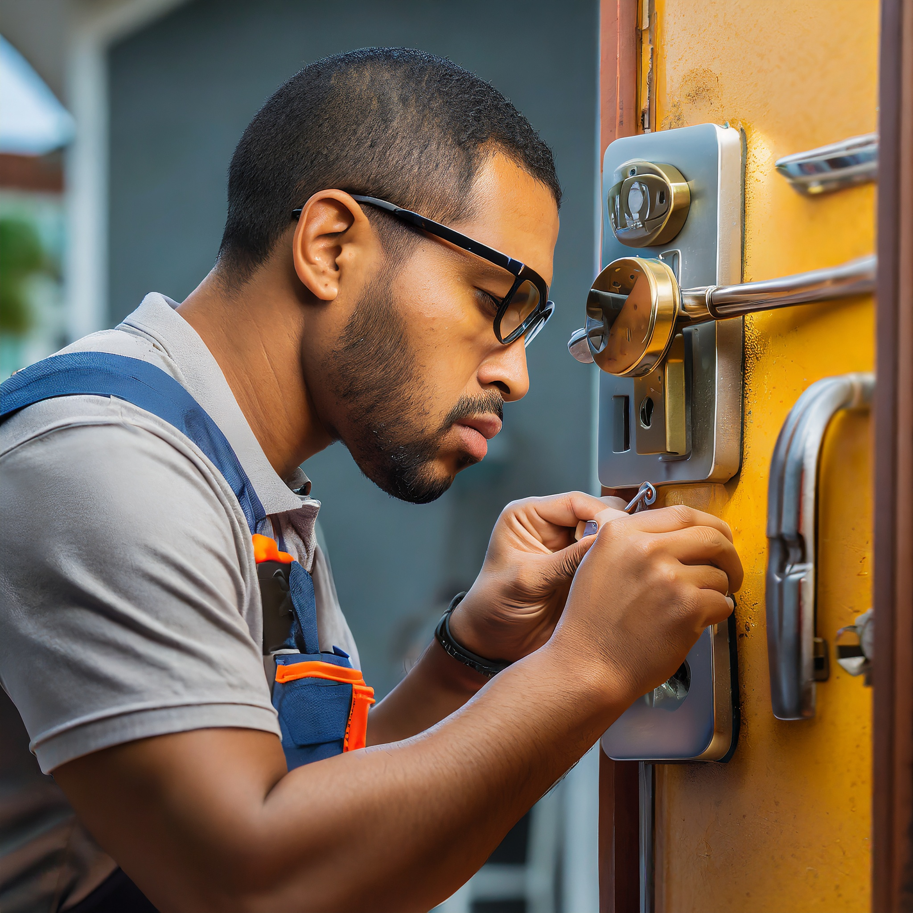

S.O.S. Llaves y claves
Bienvenidos a S.O.S. Llaves y Claves, donde nos dedicamos a superar sus expectativas en servicios de cerrajería. Nuestro equipo altamente capacitado ofrece soluciones rápidas y eficientes, desde aperturas y reparaciones hasta cambios de claves para cerraduras de todo tipo. Nos enorgullece brindar seguridad y tranquilidad a nuestros clientes con servicios especializados en puertas blindadas y cajas fuertes. En S.O.S. Llaves y Claves, su satisfacción y seguridad son nuestra prioridad. Confíe en nosotros para solucionar sus necesidades de cerrajería de manera confiable y profesional.
Servicios
-
Apertura
- Muebles
- vehículos
- inmuebles
- artículos de clave
- cajas fuertes
-
Cambios de clave
- Cerraduras sencilas
- cerraduras de seguridad
- cinlindros de vehículos
- caja fuerte de dial o digital
-
Instalación de cerraduras
- Platinas de seguridad
- ojos mágicos
- pivotes de seguridad
- pasadores
- electroimanes
- cantoneras
- tope de puerta
- gatos hidráulicos
- cajas fuertes
- puertas de seguridad
¿Quienes somos?
SOS Llaves y Claves, establecida desde el 1 de agosto de 2004, tiene como objetivo principal ofrecer servicios de seguridad. Buscamos generar empleo, bienestar y confianza entre nuestros clientes y colaboradores. Contamos con un equipo técnico y administrativo altamente capacitado, respaldado por la experiencia de 18 años de nuestro fundador. Hemos ganado la confianza de empresas reconocidas a nivel departamental y nacional. En SOS Llaves y Claves nos especializamos en servicios de seguridad, abarcando desde la apertura y reparación de cerraduras hasta el cambio de claves. Nos comprometemos a mantener altos estándares de calidad y confiabilidad, aspirando a ser su elección preferida para asegurar su bienestar y seguridad.